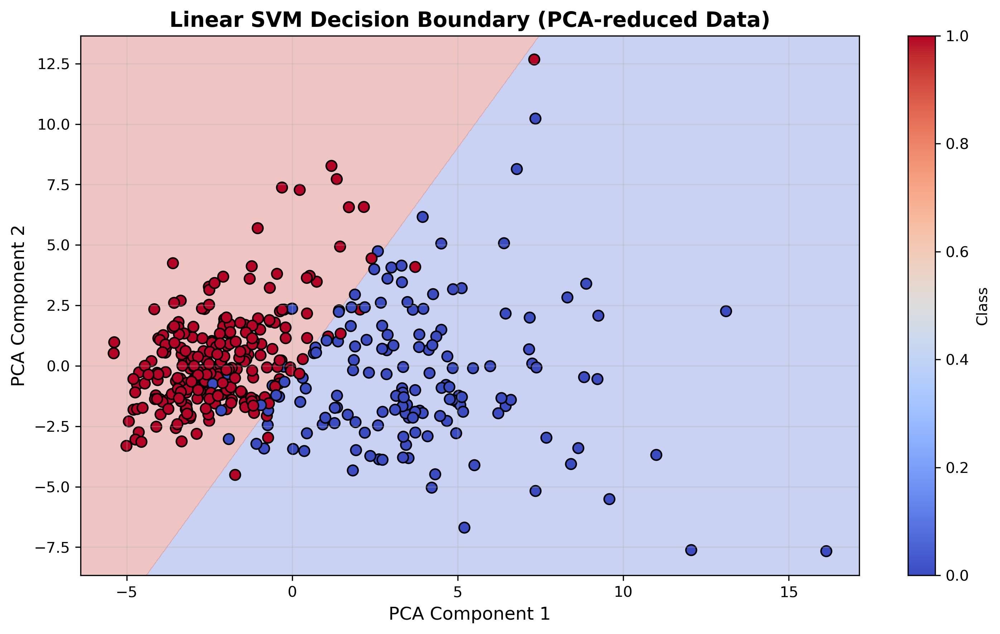
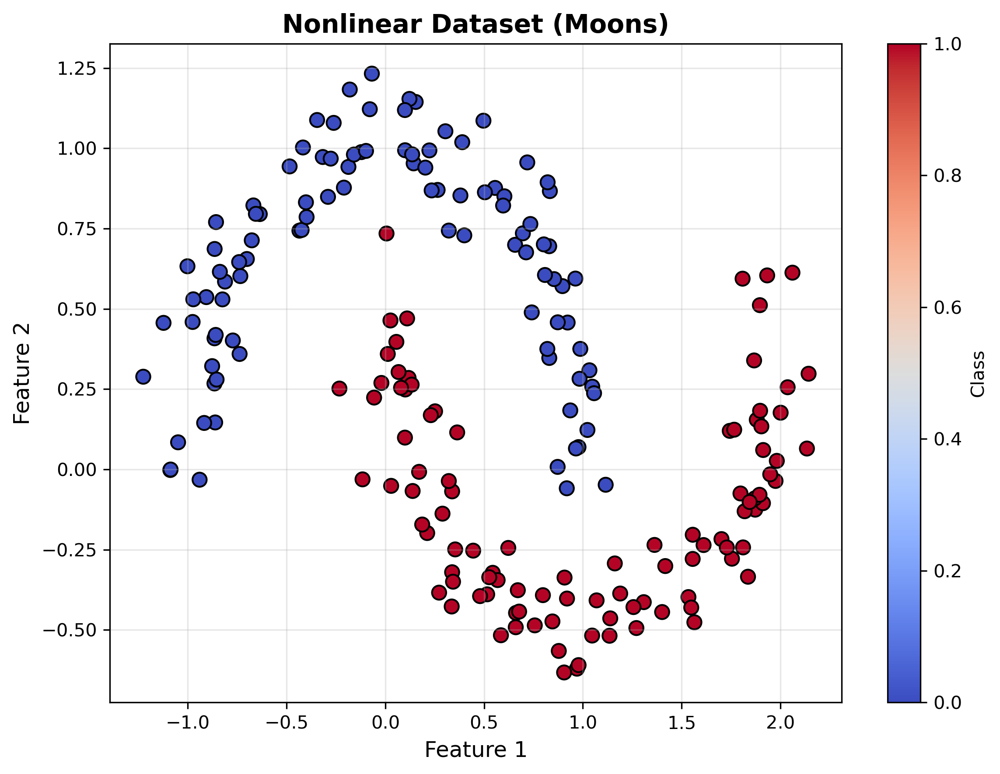
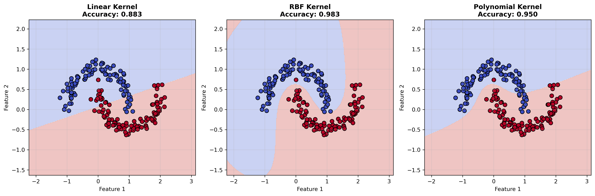
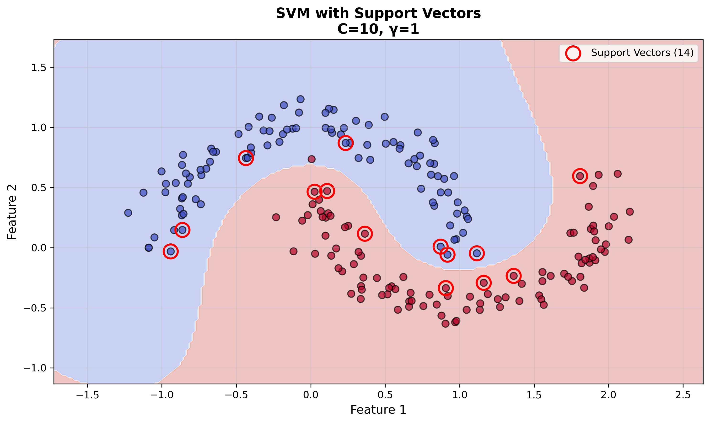
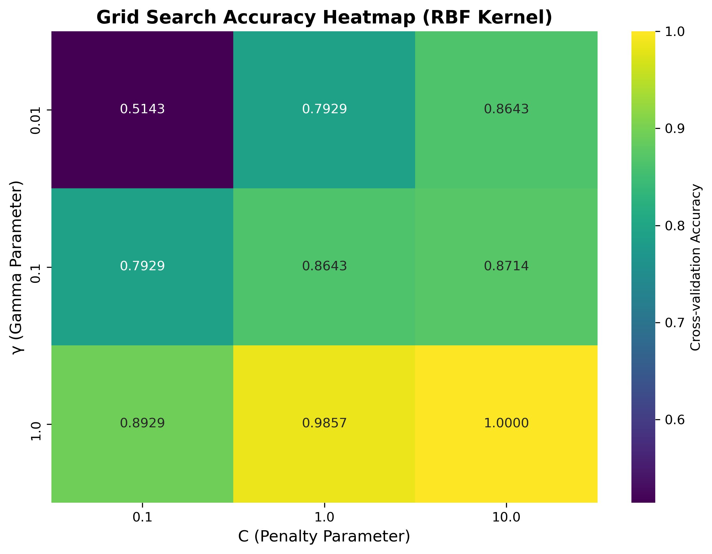

支持向量机基本概念
1.1 算法原理
支持向量机（Support Vector Machine, SVM）是一种监督学习算法，主要用于分类任务，其核心思想是在特征空间中找到最优超平面，实现不同类别样本的分离。
1.2 数学形式
对于给定训练样本集 (xi, yi)，超平面方程定义为：
样本点到超平面的距离为：
1.3 核函数类型
| 核函数类型 | 表达式 | 适用场景 |
|---|---|---|
| 线性核（Linear） | K(xi, xj) = xiTxj | 线性可分数据 |
| 多项式核（Poly） | K(xi, xj) = (xiTxj + c)d | 特征间存在多项式关系 |
| 径向基核（RBF） | K(xi, xj) = exp(-γ||xi - xj||2) | 非线性关系，默认选择 |
| Sigmoid核 | K(xi, xj) = tanh(γxiTxj + c) | 类神经网络场景 |
1.4 关键参数
- 惩罚参数 C：C越大，对误分类样本惩罚越重，模型易过拟合；C越小，允许更多误分类，模型泛化能力增强。
- RBF核参数 γ：控制样本影响范围，γ越大，支持向量影响越小，模型越复杂。
线性支持向量机实现
实验目的
- 掌握线性SVM的建模流程
- 理解决策边界与支持向量的关系
- 可视化分类结果
环境准备
import numpy as np
import matplotlib.pyplot as plt
from sklearn.datasets import load_breast_cancer
from sklearn.model_selection import train_test_split
from sklearn.svm import LinearSVC
from sklearn.metrics import accuracy_score
from sklearn.decomposition import PCA
from sklearn.preprocessing import StandardScaler数据加载与预处理
# 加载乳腺癌数据集
data = load_breast_cancer()
X, y = data.data, data.target
feature_names = data.feature_names
# 划分训练集与测试集（7:3）
X_train, X_test, y_train, y_test = train_test_split(
X, y, test_size=0.3, random_state=42
)
# 数据标准化（SVM对特征尺度敏感）
scaler = StandardScaler()
X_train_scaled = scaler.fit_transform(X_train)
X_test_scaled = scaler.transform(X_test)模型训练与预测
# 创建线性SVM模型
svm_linear = LinearSVC(C=1.0, max_iter=10000, random_state=42)
# 训练模型
svm_linear.fit(X_train_scaled, y_train)
# 预测测试集
y_pred = svm_linear.predict(X_test_scaled)
# 计算准确率
accuracy = accuracy_score(y_test, y_pred)
print(f"测试集准确率: {accuracy:.4f}")结果可视化
# 降维至2D进行可视化
pca = PCA(n_components=2)
X_train_pca = pca.fit_transform(X_train_scaled)
# 绘制决策边界
h = 0.02
x_min, x_max = X_train_pca[:, 0].min() - 1, X_train_pca[:, 0].max() + 1
y_min, y_max = X_train_pca[:, 1].min() - 1, X_train_pca[:, 1].max() + 1
xx, yy = np.meshgrid(np.arange(x_min, x_max, h), np.arange(y_min, y_max, h))
# 用降维后的数据训练模型
svm_vis = LinearSVC(C=1.0, max_iter=10000)
svm_vis.fit(X_train_pca, y_train)
Z = svm_vis.predict(np.c_[xx.ravel(), yy.ravel()])
Z = Z.reshape(xx.shape)
# 绘制图形
plt.figure(figsize=(10, 6))
plt.contourf(xx, yy, Z, alpha=0.3, cmap=plt.cm.coolwarm)
plt.scatter(X_train_pca[:, 0], X_train_pca[:, 1], c=y_train, cmap=plt.cm.coolwarm, edgecolors='k')
plt.xlabel('PCA Component 1')
plt.ylabel('PCA Component 2')
plt.title('Linear SVM Decision Boundary (PCA-reduced Data)')
plt.show()实验结果图
线性SVM在PCA降维后的决策边界可视化
- 线性SVM在乳腺癌数据集上通常能达到95%以上的准确率
- 决策边界在2D空间中表现为直线，高维空间中为超平面
- 支持向量是距离决策边界最近的样本点
非线性支持向量机实现
实验目的
- 掌握核函数（尤其是RBF）的应用
- 对比线性与非线性SVM的分类效果
- 理解核函数参数对模型的影响
数据生成与可视化
from sklearn.datasets import make_moons
from sklearn.svm import SVC
# 生成非线性数据（含噪声）
X, y = make_moons(n_samples=200, noise=0.1, random_state=42)
# 可视化数据
plt.figure(figsize=(8, 6))
plt.scatter(X[:, 0], X[:, 1], c=y, cmap=plt.cm.coolwarm, edgecolors='k')
plt.xlabel('Feature 1')
plt.ylabel('Feature 2')
plt.title('Nonlinear Dataset (moons)')
plt.show()月牙数据集可视化
非线性月牙形状数据集，包含两个交错的半圆形类别
RBF核SVM模型训练
# 划分训练集与测试集
X_train, X_test, y_train, y_test = train_test_split(X, y, test_size=0.3, random_state=42)
# 创建RBF核SVM模型
svm_rbf = SVC(kernel='rbf', gamma='scale', C=1.0, random_state=42)
# 训练与预测
svm_rbf.fit(X_train, y_train)
y_pred_rbf = svm_rbf.predict(X_test)
accuracy_rbf = accuracy_score(y_test, y_pred_rbf)
print(f"RBF SVM测试集准确率: {accuracy_rbf:.4f}")不同核函数效果对比
# 定义核函数列表
kernels = ['linear', 'rbf', 'poly']
titles = ['Linear Kernel', 'RBF Kernel', 'Polynomial Kernel']
# 绘制决策边界对比
plt.figure(figsize=(15, 5))
for i, kernel in enumerate(kernels):
# 训练模型
svm = SVC(kernel=kernel, gamma='scale', C=1.0, random_state=42)
svm.fit(X_train, y_train)
# 绘制决策边界
plt.subplot(1, 3, i+1)
h = 0.02
x_min, x_max = X[:, 0].min() - 1, X[:, 0].max() + 1
y_min, y_max = X[:, 1].min() - 1, X[:, 1].max() + 1
xx, yy = np.meshgrid(np.arange(x_min, x_max, h), np.arange(y_min, y_max, h))
Z = svm.predict(np.c_[xx.ravel(), yy.ravel()])
Z = Z.reshape(xx.shape)
plt.contourf(xx, yy, Z, alpha=0.3, cmap=plt.cm.coolwarm)
plt.scatter(X[:, 0], X[:, 1], c=y, cmap=plt.cm.coolwarm, edgecolors='k')
plt.title(titles[i])
plt.show()实验结果图
不同核函数的分类效果对比：线性核、RBF核、多项式核
支持向量可视化
RBF核SVM的支持向量（用圆圈标记）和决策边界
- 线性核：无法处理非线性数据，分类边界为直线
- RBF核：通过高斯函数将数据映射到高维，可拟合复杂边界
- 多项式核：适用于特征间存在多项式关系的数据
- γ参数影响：γ过大易过拟合，γ过小易欠拟合
支持向量机参数调优
调优目标
通过优化超参数提升模型性能，核心参数包括：
- C：惩罚系数，控制过拟合与欠拟合平衡
- γ：RBF核函数的带宽参数，控制样本影响范围
- 核函数类型：线性/非线性选择
网格搜索实现
from sklearn.model_selection import GridSearchCV
import seaborn as sns
import pandas as pd
# 定义参数网格
param_grid = {
'C': [0.1, 1, 10],
'gamma': [0.01, 0.1, 1],
'kernel': ['rbf']
}
# 创建SVM模型
svm = SVC(random_state=42)
# 网格搜索（5折交叉验证）
grid_search = GridSearchCV(
estimator=svm,
param_grid=param_grid,
cv=5,
scoring='accuracy',
n_jobs=-1
)
grid_search.fit(X_train, y_train)
# 输出最佳参数
print(f"最佳参数: {grid_search.best_params_}")
print(f"最佳交叉验证准确率: {grid_search.best_score_:.4f}")
# 使用最佳模型预测测试集
best_svm = grid_search.best_estimator_
y_pred_best = best_svm.predict(X_test)
print(f"调优后测试集准确率: {accuracy_score(y_test, y_pred_best):.4f}")参数影响可视化
# 绘制参数调优热力图
results = pd.DataFrame(grid_search.cv_results_)
pivot = results.pivot(index='param_gamma', columns='param_C', values='mean_test_score')
plt.figure(figsize=(8, 6))
sns.heatmap(pivot, annot=True, cmap='viridis', fmt='.4f')
plt.title('Grid Search Accuracy Heatmap (RBF Kernel)')
plt.xlabel('C')
plt.ylabel('gamma')
plt.show()参数调优结果
网格搜索参数调优热力图 - 不同C和γ参数组合的交叉验证准确率
- 最佳参数组合通常位于热力图的高准确率区域
- C与γ存在交互作用，大C需配合小γ避免过拟合
- 建议先进行粗网格搜索，再在最优区域进行细网格搜索
垃圾邮件分类交互实例
参数设置
文本分类测试
模型性能
当前模型状态：未训练
训练集准确率：--
测试集准确率：--
支持向量数量：--
📊 训练结果分析
🎯 模型性能解读
点击"训练模型"按钮后，这里将显示详细的性能分析
🔍 参数影响分析
参数调整对模型性能的影响将在此展示
💡 优化建议
基于当前结果的模型优化建议将在此显示
垃圾邮件分类在线Python实例
点击下方的"运行代码"按钮，在线体验SVM垃圾邮件分类算法：
🎯 实验说明
- 数据集：使用20newsgroups数据集模拟垃圾邮件分类
- 特征提取：TF-IDF向量化，最大特征数5000
- 模型参数：RBF核，C=10，γ=0.1
- 评估指标：准确率、分类报告
🔗 更多在线实验平台
思考题与练习
📝 基础理论题
1. 支持向量的理解
问题：解释SVM中"支持向量"的含义，为何它们对模型至关重要？如果删除非支持向量样本，对模型性能有何影响？
💡 点击查看答案提示
支持向量是距离决策边界最近的样本点，它们决定了最优超平面的位置。删除非支持向量不会影响模型，因为决策边界只由支持向量确定。
2. 硬间隔vs软间隔
问题：对比硬间隔SVM与软间隔SVM的适用场景，举例说明何时需要使用软间隔？参数C的作用是什么？
💡 点击查看答案提示
硬间隔适用于线性可分数据；软间隔适用于有噪声或非线性可分数据。C控制对误分类的惩罚程度，C越大越严格。
3. 核函数的作用机制
问题：RBF核函数如何将低维非线性数据映射到高维线性可分空间？γ参数对决策边界有何影响？
💡 点击查看答案提示
RBF核通过高斯函数计算样本间相似度，隐式地将数据映射到无限维空间。γ越大，决策边界越复杂，容易过拟合。
🔧 实践操作题
4. 参数调优实验
任务：在垃圾邮件分类中，如果模型出现过拟合现象（训练集准确率很高，测试集准确率较低），应如何调整参数C和γ？请设计实验验证你的方案。
5. 核函数选择实验
任务：尝试用多项式核（poly）替换RBF核处理月牙数据，对比分类效果并分析原因。调整degree参数观察其影响。
6. 特征工程影响
任务：在文本分类中，比较不同TF-IDF参数设置对SVM性能的影响：
- max_features: 1000 vs 5000 vs 10000
- ngram_range: (1,1) vs (1,2) vs (1,3)
- min_df: 1 vs 2 vs 5
🧠 深度思考题
7. SVM vs 其他算法
问题：比较SVM与逻辑回归的异同点，在高维稀疏数据（如文本）上哪个更有优势？为什么？
| 对比维度 | SVM | 逻辑回归 |
|---|---|---|
| 决策边界 | 最大间隔超平面，可非线性 | 线性决策边界（sigmoid函数） |
| 概率输出 | 不直接输出概率，需额外计算 | 直接输出概率值 |
| 高维性能 | 表现优秀，适合高维稀疏数据 | 在高维数据上容易过拟合 |
| 训练速度 | O(n³)，大数据集较慢 | O(n)，训练速度快 |
| 内存占用 | 只存储支持向量，内存友好 | 需存储所有特征权重 |
| 核函数 | 支持多种核函数，处理非线性 | 主要处理线性关系 |
| 正则化 | 通过C参数控制 | 通过L1/L2正则化 |
| 适用场景 | 文本分类、图像识别、生物信息 | 点击率预测、风险评估 |
- SVM的最大间隔原理在高维空间中更稳定
- 核函数能有效处理特征间的复杂关系
- 只依赖支持向量，对噪声数据更鲁棒
- 在样本数量远小于特征数量时表现更好
8. 实际应用场景
问题：设计一个基于SVM的图像分类系统，需要考虑哪些关键问题？
- 特征提取方法选择
- 数据预处理策略
- 核函数和参数选择
- 多分类策略（一对一 vs 一对多）
- 计算效率优化
9. 算法改进思考
问题：SVM在处理大规模数据时面临哪些挑战？有哪些改进方法？
💡 思考方向
- 时间复杂度：O(n³) → 如何优化？
- 内存占用：核矩阵存储问题
- 在线学习：如何处理流式数据？
- 并行化：如何利用多核/GPU加速？
🎯 挑战项目
10. 综合项目：智能客服分类系统
项目描述：设计一个基于SVM的客服问题自动分类系统，能够将用户问题分为：技术支持、账单查询、产品咨询、投诉建议四类。
项目要求：
- 数据收集：模拟或收集真实客服对话数据
- 文本预处理：分词、去停用词、词干提取
- 特征工程：TF-IDF、词向量、N-gram等
- 模型训练：多分类SVM，参数调优
- 性能评估：准确率、召回率、F1-score
- 系统部署：Web界面，实时分类
评估标准：
- 分类准确率 > 85%
- 响应时间 < 1秒
- 系统稳定性和用户体验
💡 学习建议
- 理论与实践结合：在理解数学原理的基础上，多动手实验
- 参数敏感性：通过可视化理解不同参数对模型的影响
- 数据特性分析：根据数据特点选择合适的核函数和预处理方法
- 性能优化：关注模型的泛化能力，避免过拟合
- 实际应用：尝试将SVM应用到真实问题中，积累经验